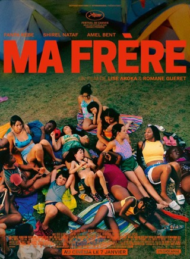

Summer Beats
From the festival
What begins as a sunlit escape from Paris, blossoms into something rich and deeply human—it feels like stepping into the messy, joyful honesty of real youth. When Shaï and Djeneba, friends from the same neighborhood, take jobs as camp counselors for the summer, what unfolds over the season is a beautiful, playful, and at times quietly profound story of friendship, identity, and growth. Directors Lise Akoka and Romane Gueret bring a striking sense of realism, blending humor and emotion with a light, confident touch. The young cast is simply radiant—natural, funny, and moving in a film that effortlessly dances between genres, refusing to fit in a box. There’s class, queerness, cultural tension, and resilience here, all explored with sensitivity and heart. And the music! A soundtrack brushed with feeling carries the rhythm of belonging. Summer Beats is bright, spirited, and full of hope. It will leave you smiling, moved—and feeling joyfully connected.—João Federici
- Directed by
- Lise Akoka, Romane Gueret
- Country
- France
- Year
- 2025
- Running time
- 112 minutes
- Language
- French
- Premiere
- US Premiere
Source: Festival website programme (MVFF48): Wayback Machine copy; Festival film page: Wayback Machine copy; Poster from AlloCiné